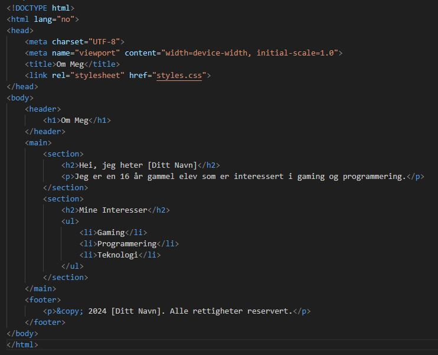

Vi bruker -taggen for å koble til det eksterne CSS-dokumentet (styles.css).
CSS-filen (styles.css) inneholder stilene som brukes for å formatere HTML-elementene.
Definerer farger, skrifttyper, marginer, padding, og andre stilrelaterte egenskaper.
Du kan tilpasse innholdet og stilene etter dine egne preferanser.
Lykke til med nettsiden din! 🚀 Hvis du har flere spørsmål eller trenger mer hjelp, bare si ifra!
Kilde: copilot
Svar på denne spørreundersøkelsen, og legg merke til at du må klikke
next et par ganger for å få muligheten til å legge igjen en kommentar:
Created with SuperSurvey
Ordforklaring (klikk for å veksle)
Dette er en popup laget med javascript
Kilde (popup): w3schools
Klikk her for ukas læringsvideo.
HTML og CSS Kilde / videoverktøy: LOOM
Her er eksempler på css-kode du kan bruke:
Kilde / videoverktøy: LOOM
Her er eksempler på css-kode du kan bruke:
I menyen på denne websiten har jeg brukt bl.a. word-spacing: 1rem;
(rem - relativ til gjeldende fontstørrelse. 1 er samme, 2 blir da dobbelt osv.)
"the rem unit is only relative to the document's root element,
while the em unit is only relative to the immediate parent of the targeted element"
Her har vi eksempel på html-kode for å sette opp en hjemmeside:

(det er mulig å vise html-kode som tekst på en html-side, men det er litt mye arbeid)
body {
font-family: Arial, sans-serif;
margin: 0;
padding: 0;
background-color: #f4f4f4;
}
header {
background-color: #333;
color: white;
padding: 1em 0;
text-align: center;
}
main {
padding: 2em;
}
h1, h2 {
color: #333;
}
ul {
list-style-type: none;
padding: 0;
}
li {
background-color: #fff;
margin: 0.5em 0;
padding: 0.5em;
border: 1px solid #ddd;
}
footer {
background-color: #333;
color: white;
text-align: center;
padding: 1em 0;
position: fixed;
width: 100%;
bottom: 0;
}
Slik kan du feste et element på sida med nøyaktige "koordinater":
div.fixed { /* brukes med taggen: div class="fixed" */
position: fixed;
top: 1pt;
left: 1pt;
width: 60%;
border: 3px solid #73AD21;
}
Klikk her for forklaring på hvordan du fjerner auto closing tags i VSCode